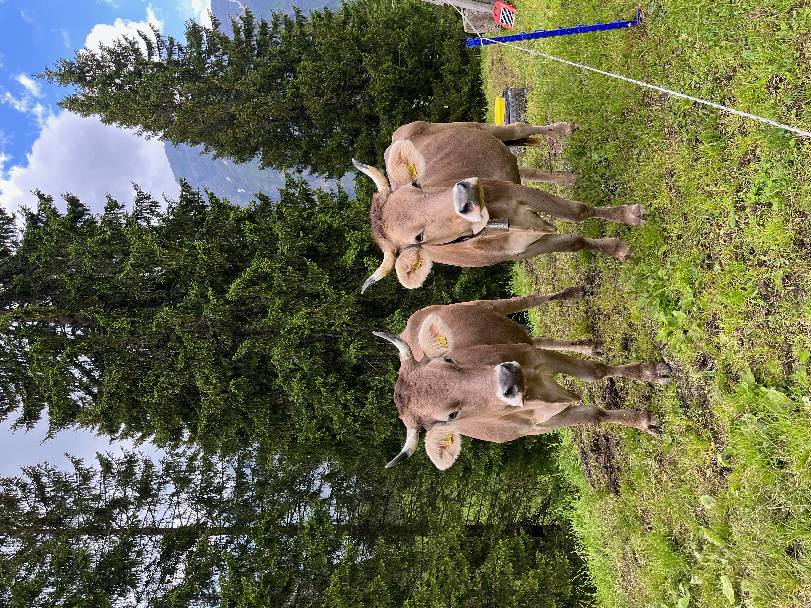

Willkommen auf der Alp Ober Roggenloch
Hoch über dem Tal, umgeben von saftigen Wiesen, alten Fichten, frischer Bergluft und glücklichen Tieren, da liegt die Alp Ober Roggenloch. Unsere wunderschöne Alp befindet sich im Muotathal, mitten im Herzen der Schweiz.

Familie Suter freut sich auf deinen Besuch
Die herrliche Landschaft und die frische Alpenluft werden dich begeistern. Bei einem Roggenlochplättli oder einem Älplerkaffee geniesst du die gemütliche Atmosphäre in unserer Gartenwirtschaft.
Ebenfalls bieten wir für den süssen Gluscht Niidle mit Meringues oder ein leckeres Jogurt-Dessert an, garniert mit frischem Alpenrahm. Nach dem Gaumenschmaus besteht die Möglichkeit, selbstgemachte Milchspezialitäten wie Alpkäse, Wetterfroschkäse und Alp Butter zu kaufen.
Verbinde diesen Ausflug zu unserer Alp mit einer Wanderung im schönen Bödmeren Wald auf der Urwaldspur.
Wir bewirtschaften unsere Alp mit viel Herzblut und laden dich herzlich ein, bei uns vorbeizuschauen. Wir freuen uns auf deinen Besuch!